停／害怕／完成須寫進活動。
教學支援 · 2.8b
請依序研讀導讀、重點與池邊準則，聽粵語說明，再以練習核對理解。
本網站根據課程講義、課堂分享與溝通工具筆記整理，供未能出席面授的學員系統研讀。不能代替醫療診斷、法律意見、課堂實習或面授扶抱示範。涉及健康、用藥、脊柱或癲癇等情況，須按家長／醫護文件執行。
圖卡須列印、過膠並扣於池邊。學員遞出「停／害怕／幫忙」必須即時兌現。先－後卡用以預告：先完成指定小步，再給予休息或選擇。
研讀次序：重點 → 粵語說明 → 本單元練習 → 下一單元「常見障礙與教學備註」。
講義出處：2.8b 泳池提示咭與先－後卡 · 點樣用
課堂情境
學員遞出「停」卡，教師視而不見繼續練習。
教學原則
過膠、打孔、扣在浮板或教師腰繩；完成後可把卡放入「完成盒」；學員遞卡＝主動溝通，教師必須兌現。
池邊執行
停就停、幫忙就幫忙，先建立「溝通有用」。
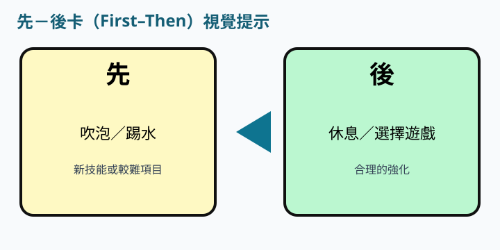
講義出處：2.8b 泳池提示咭與先－後卡 · 與 App 銜接
課堂情境
紙本圖與 App 圖像含義不同，學員因而選錯卡。
教學原則
紙本圖與匡智溝通易／GoTalk 用同一圖像含義；平板留在岸上乾區；水中只用防水卡。
池邊執行
與家長交換同一套 PDF／App 版面；每課只強調 3–5 張核心卡。
列印本頁後過膠。學員遞卡＝主動溝通，必須兌現。
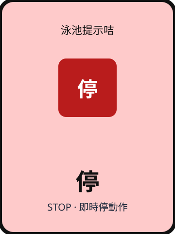
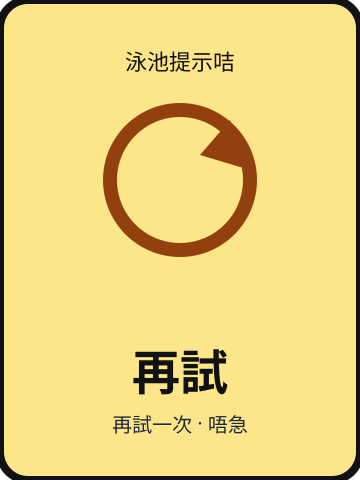
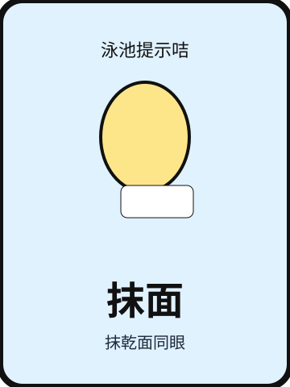
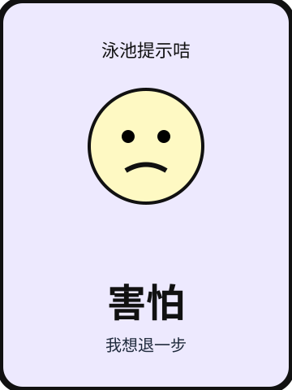
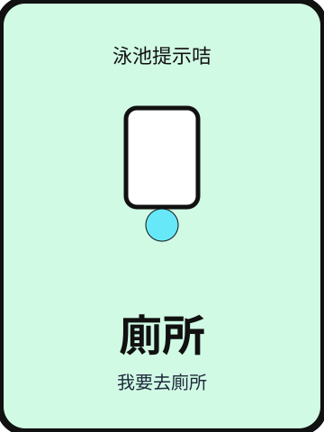
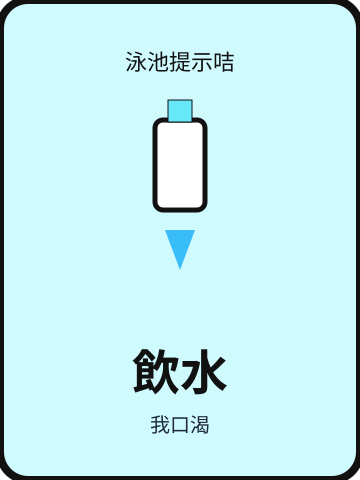
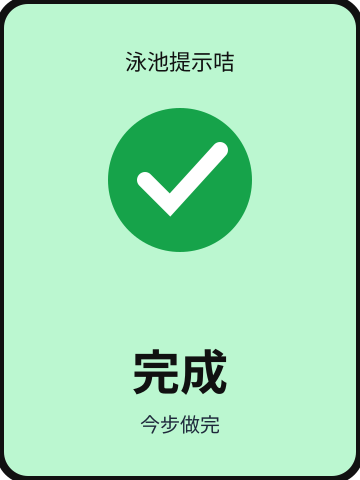
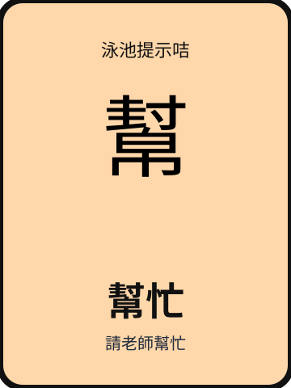
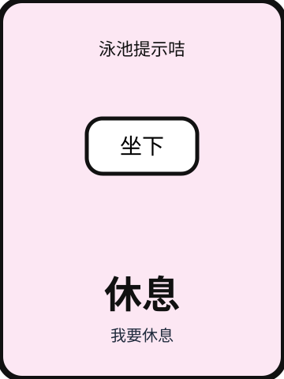
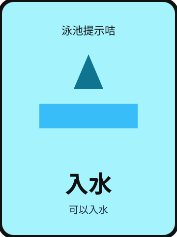
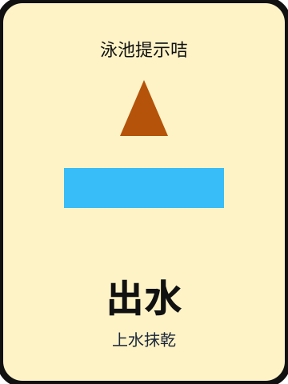
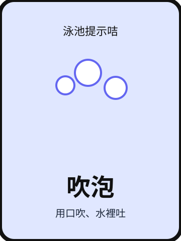
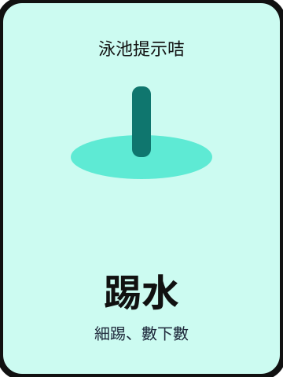
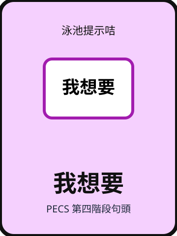
三題判斷：下列做法是否符合本單元池邊準則。
以下與本頁錄音同一份講稿。建議先讀重點，再聽說明，把判斷次序聽清楚。